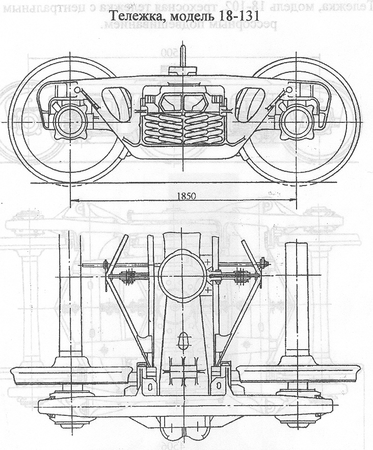

Назначение: для подкатки под все типы 4-осных грузовых вагонов
Параметры
| Номер проекта | 131.00.000 |
| Технические условия | ТУ 3.557-88 |
| Модель | 18-131 |
| Изготовитель | ГПО "УВЗ" |
| Масса тележки, т | 5,2 |
| База, мм | 1850 |
| Максимальная нагрузка от колесной пары на рель, кН(тс) | 245,55(25) |
| Статический прогиб рессорного комплекта, мм | 50-52 |
| Гибкость рессорного комплекта, м/МН | 1,08 |
| Колеса цельнокатанные диаметром, мм | 950 |
| Тип оси | Специальная |
| Скорость конструкционная, км/ч | 120 |
| Высота опорной поверхности подпятника от головки рельса,мм | 803+15-18 |